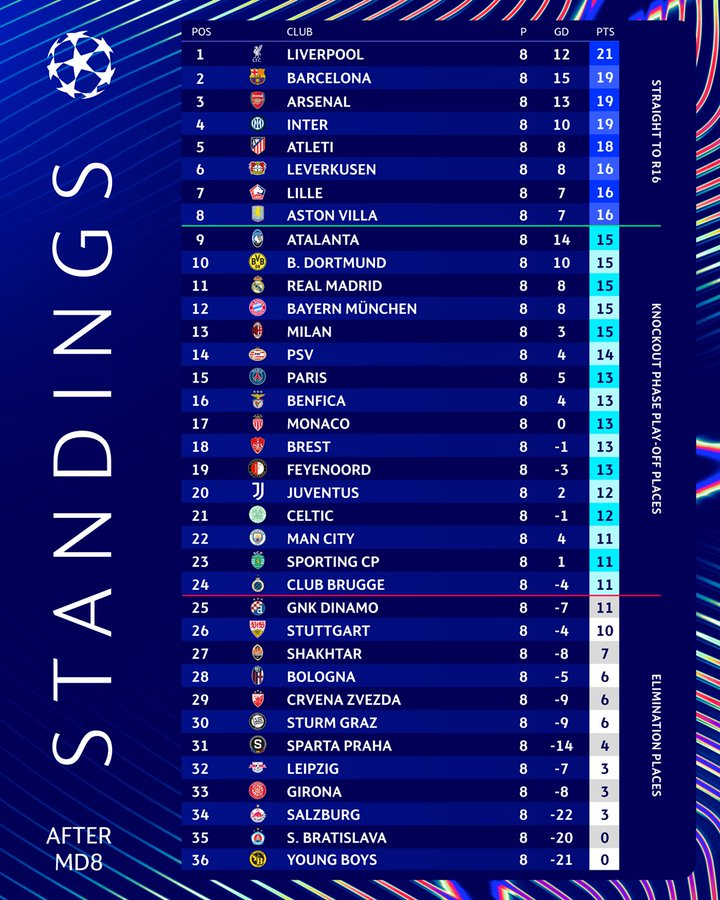
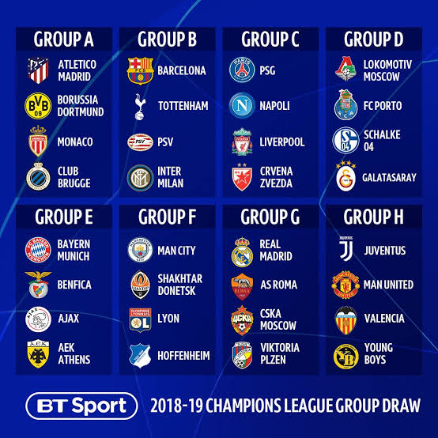

The new Champions League group stage format features a league style table where teams within the top 8 have a guarenteed knockout spot, the 9-24 spots have to play an additional 2 leg knockout playoff against another team within this grouping, and the last spots are eliminated from the competition entirely. Teams are divided into 4 pots and each team will play 2 teams from each pot. Each team will also have 4 home and 4 away games. A win will be 3 points, a draw is 1, and a loss is awarded 0 points. Depending how teams place determines their knockout round spots, and their path to the final

The old format featured 32 teams divided into 8 groups of 4. Each team would play 1 home and 1 away game against every opponent in their group. The first and second place teams would move onto the knockout stages, where the third place team would be given a spot in UEFA's Europa League, and the last place team would be out of the remainder of the competition. The first place teams are drawn against second place teams for the knockout round. Teams from the same league were not allowed to be drawn against each other. The fixtures for each round of the knockouts, with exception of the final, had 2 legs with 1 being home and another away.

The Champions League has a long history spanning 70+ years of competion. With such a long history, the winners of the competition vary with some notable teams winning multiple times. Real Madrid is the most notable with 15 in titlesthe competion. The most of any participant. Other multi-winning teams include: